Goku was sent to earth as an infant to conquer the planet for the Saiyans, but suffers a brain injury and looses both his memory and the brutal Saiyan nature. Goku grows up and marries Chi-Chi. They have a son named Gohan.
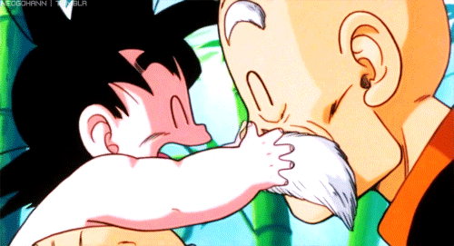
Grandpa Gohan holding baby Goku after he arrives on earth. Courtesy of Gifer.com
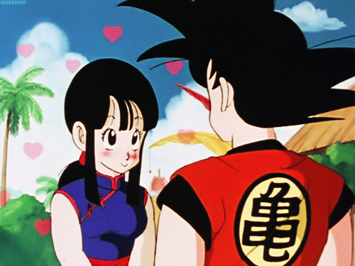
Goku and Chi Chi falling in love. Courtesy of Gifer.com
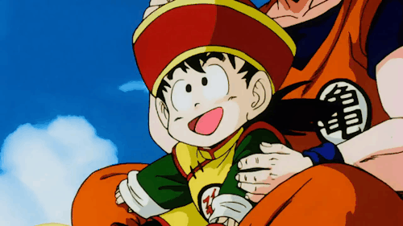
Goku and Gohan flying on nymbus. Courtesy of Gifer.com
Saiyan-Saga...
Goku's brother, Raditz, arrives and reveals to Goku he is a Saiyan.
Together, they can finish the mission to conquer the earth. Goku refuses, so Raditz kidnaps Gohan. After lots of yelling and flexing, Piccolo, Goku, and Raditz fight. Goku sacrifaces himself so Piccolo could kill Raditz with a Special Beam Cannon. Piccolo, Bulma, Krillin, and Master Roshi learn
two more Saiyans, Vegeta and the inferior Nappa, will arrive on earth in one year. In the afterlife, Goku trains under King Kai and becomes more powerful than ever.
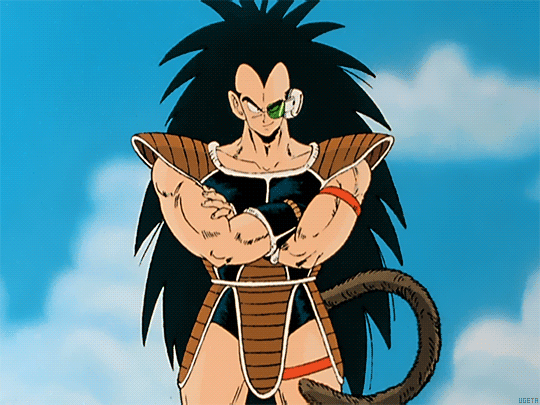
Raditz arrives! Courtesy of Gifer.com
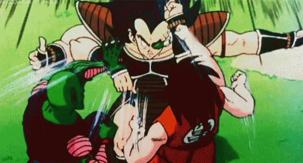
Goku & Piccolo vs Raditz. Courtesy of Tenor.com
Raditz defeated. Gokus Sacrafice. Courtesy of Gifer.com
Over 9000
Back on earth Vegeta and Nappa arrive. Goku's friends gather all the Dragon Balls and wish for Shenron the revive Goku. After much yelling
and flexing, they all die, all of them! Piccolo sacrifices himself to save Gohan. Since Piccolo dies, his other half Kami dies as well.
Goku arrives late with his power over 9000 and makes easy work of Nappa. Vegeta kills Nappa in disgust and takes on Goku. Gohan, Krillen, and Yajorobe help Goku defeat Vegeta.
Krillen overhears Vegeta mention another set of Dragon Balls on the planet Namek. Goku spares Vegeta life and flees to Earth.
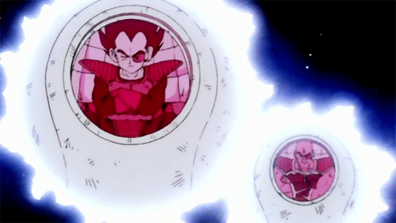
Vegeta and Nappa Travel to Earth. Courtesy of Pinterest.com
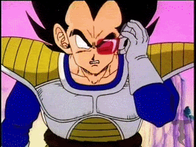
Vegeta reads Goku power over 9000. Courtesy of Giphy.com
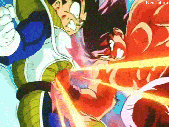
Goku defeats Vegeta. Courtesy of Giphy.com
Namek and Captain Ginyu Saga
While Goku recovers, the other head to Namek to collect the Dragon Balls and revive their dead friennds. On Namek, they realize the crazed villian Frieza, also seeks the Dragon Balls to
wish for his immortality. Vegeta arrives, seeking immortality as well. Vegeta fights Freiza's henchmen, the Ginyu Force.
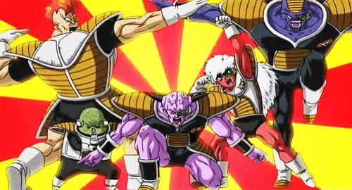
Ginyu force pose. Courtesy of Gfycat
Frieza Saga
Gohan and Krillen use the Dragon Balls to revive Piccolo, which brings Dragon Balls back to earth. None of them are a match for Frieza. Vegeta loses all hope until Goku arrives, fashionably late, as always.
Befroe he dies, Vegeta tells Goku Frieza is the one who destroyed the Saiyan race and their home planet. Goku is unable to defeat Frieza, even with a Kamehameha and Kiao ken times 20! Frieza kills Krillin.
After much yelling and flexing, Goku turns Super Saiyan. On earth the Dragon Balls are used to revive the fallen fighters and teleport
everyone, except Frieza and Goku, from Namek to Earth. Goku defeats Frieza and the Planet Namek is destroyed.
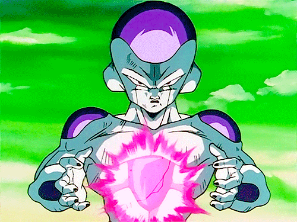
Freiza. Courtesy of Pinterest
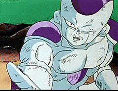
Freiza kills Krillin. Courtesy of Gfycat
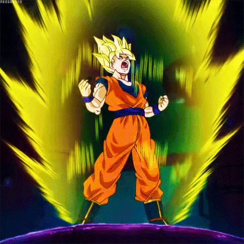
Super Saiyan Goku. Courtesy of Gfycat
Trunks Andriods Saga
A year later, Goku finally returns to earth. A mysterious Super Saiyen easily dispatches Frieza and his father, King Cold, and introduces himself to Goku as Trunks, a time-traveling Saiyan and the future son of Vegeta.
He warns Goku about two androids who will attack in three years. Goku, Gohan, and Piccolo train for their arrival. Android 19 and Dr. Gero finally arrive. Dr. Gero activates Andriod 17 and 18 who kill Dr. Gero.
They activate andriod 16 who specifically built to kill Goku.
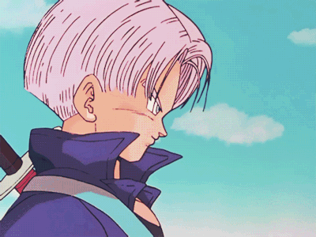
Trunks going Super Saiyan. Courtesy of Tunblr
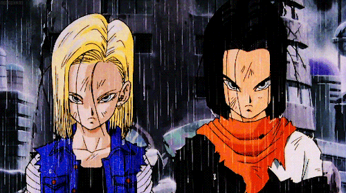
Andriod 17 & 18. Courtesy of Pinterest
Andriod 16. Courtesy of Reddit
Cell Saga
Cell, a lifeform created by Dr. Gero, arrives and absorbs 17 and 18
to achieve his perfect state. Gohan, angered from having watched Cell brutally destroy his friends, powers up in Super Saiyan 2 and decimates Cell. Cell attempts to destroy the entire planet, but Goku grabs him and teleports him away to King Kai's Planet, sacrificing himself to save earth again. Back on earth, Cell returns, but Gohan defeats Cell
as Vegeta and Goku yell behind him.
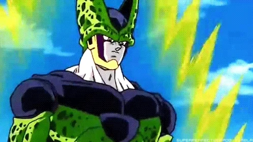
Cell powering up. Courtesy of Giphy
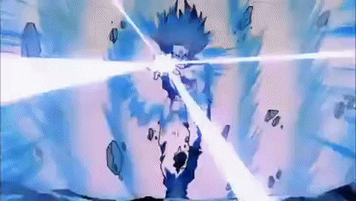
Gohan defeats Cell. Courtesy of Gfycat
Majin Buu Saga
Seven years later, Goku meets his second son, Goten, and Goten's best friend, present day Trunks. They learn of a wizard, Babidi, who seeks to release a dangerous being called Majin Buu. Majin Buu is released. They learn the fusion dance and, together formed Gotenks. Goku and his friends are thrown into battle with
Super Buu, the result of Evil Buu eating Majin Buu. In battle Goku reaches Super Sayin 3.
Majin Buu. Courtesy of Reddit.com
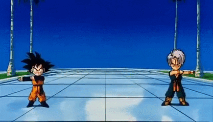
Goten and Trunks Fusion Dance. Courtesy of Gfycat
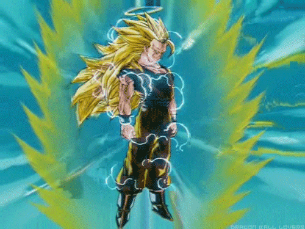
Super Saiyan 3 Goku. Courtesy of Reddit.com
Fusion Kid Buu Peacefull World Saga
Goku and Vegeta use fusion earings to combine to become Vegito. Vegito overpowers Super Buu but get absorbed by Buu. Goku and Vegeta split up inside Buu and release the rest of the Z fighters. This returns Buu to his original form Kid Buu. Goku defeats Kid Buu
using a Spirit Bomb with the power of every single person on Earth. Goku wishes for Buu to be reincarnated as a good person, and 10 years later, Goku meets Buu's human reincarnation, the young Uub. Goku takes Uub under his wing training him to become the defender of Earth. And all this happens after a ton of yelling and flexing.
The End.
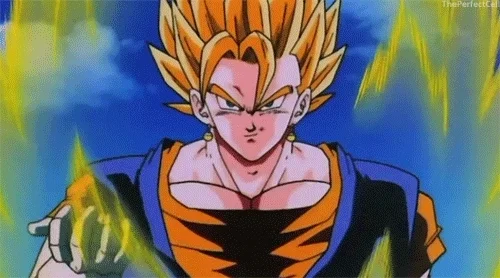
Super Saiyan Vegito. Courtesy of Giphy
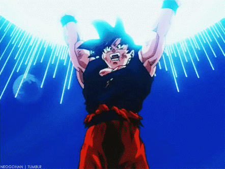
Goku holding up Spirit Bomb. Courtesy of Gfycat